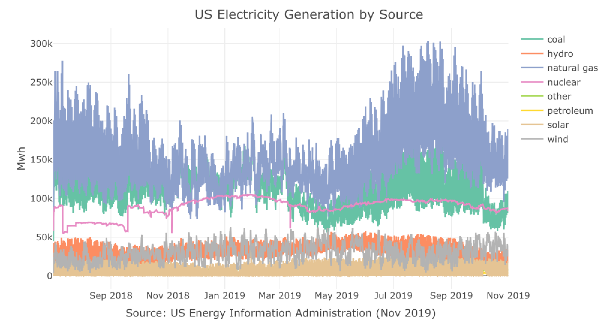

The USgrid R package provides a set of high frequency (hourly) time-series datasets, describing the demand and generation of electricity in the US (lower-48 states, excluding Alaska and Hawaii). That includes the following series:
US_elec- the total hourly demand and supply (generation) for electricity in the US since July 2015US_source- the US net generation of electricity by energy source (natural gas, coal, solar, etc.) since July 2018Cal_elec- The California subregion hourly demand by operator since July 2018
All datasets are in tsibble format
Source: US Energy Information Administration, Nov 2019
Examples
The hourly demand and generation (supply) of electricty in the US:
library(USgrid)
library(plotly)
data(US_elec)
plot_ly(data = US_elec,
x = ~ date_time,
y = ~ series,
color = ~ type,
colors = c("#66C2A5","#8DA0CB"),
type = "scatter",
mode = "lines") %>%
layout(title = "US Electricity Demand vs. Supply (Hourly)",
yaxis = list(title = "Mwh"),
xaxis = list(title = "Source: US Energy Information Administration (Nov 2019)"))
The hourly generation (supply) of electricty in the US by source:
plot_ly(data = US_source,
x = ~ date_time,
y = ~ series,
color = ~ source,
type = "scatter",
mode = "lines") %>%
layout(title = "US Electricity Generation by Energy Source",
yaxis = list(title = "Mwh"),
xaxis = list(title = "Source: US Energy Information Administration (Nov 2019)"))
The California subregion hourly demand by operator
plot_ly(data = Cal_elec,
x = ~ date_time,
y = ~ series,
color = ~ operator,
type = "scatter",
mode = "lines") %>%
layout(title = "California Hourly Demand by Operator",
yaxis = list(title = "Mwh"),
xaxis = list(title = "Source: US Energy Information Administration (Nov 2019)"))